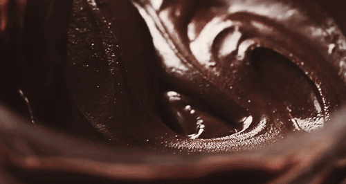

What is Milk Chocolate?
Milk chocolate is an indulgent, melt in the mouth treat. Creamy and smooth in texture, milk chocolate is loved the world over. Here’s what makes it so special.
How is Milk chocolate made?
Crafting milk chocolate is a labour of love, with three main stages:
First, chocolate producers blend milk ingredients and sugar and gently mix them with chocolate liquor and cocoa powder. The mixture is dried and becomes a milk chocolate crumbly powder.
The final stage is where milk chocolate gets its smooth and velvety taste and texture through a stage called ‘conching’, which means carefully mixing all the ingredients together. Like a chef in his own kitchen, the master chocolatiers follow a traditional long conching which guarantees a rich, subtle flavour development. The process starts at a low temperature and as it starts mixing, the temperature is raised very slowly to help it dry, and develop new delicate flavours from the heat.
Care is taken to gently mix for long enough to full develop the chocolate flavours, and allow ingredients to combine together in the most silky way possible.
Milk Chocolate's Smooth Taste
Milk chocolate gets its mild, velvety taste from a delicate balance of ingredients.
Whilst milk chocolate and dark chocolate both use cocoa liquor, cocoa butter and sugar, milk chocolate also uses milk powder, to give its creamier taste, texture, and lighter colour.
Make the Most of Milk Chocolate
Milk chocolate’s subtly sweet taste makes it the perfect partner to your favourite treats.
Pair milk chocolate with a cup of Darjeeling tea for an afternoon break. Or, combine popcorn with almonds and milk chocolate to enhance a classic film night snack.